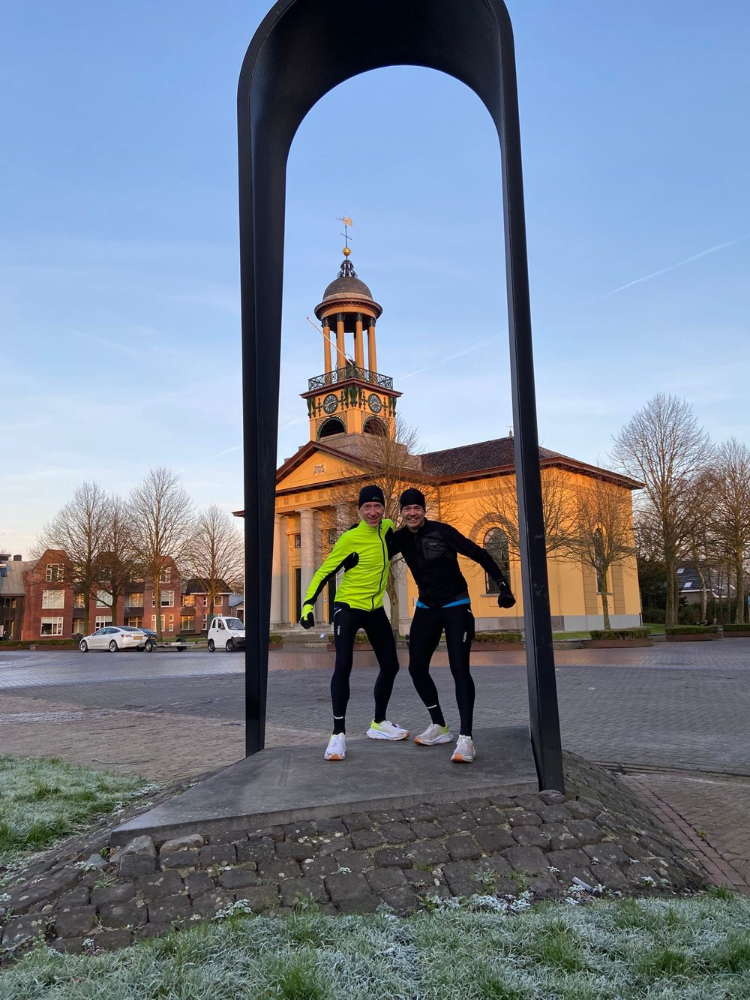

Het verhaal
Het begon op 1 november 2020 met een marathon naar huis: van Oldemarkt naar Aldeboarn. Sindsdien lopen we in etappes verder, richting Santiago de Compostela.
De tocht volgt het Jabikspaad vanaf St.-Jacobiparochie, het Friese startpunt van de Jacobsroute. Via Overijssel en Gelderland ging het bij Kleef de grens over, langs de Niederrhein, en via Limburg weer Nederland in.
We lopen in etappes, wanneer het past. Soms zit er een jaar tussen, soms twee dagen.
Onze spelregels
- Elke etappe is minstens een marathon (42,2 km). Langer mag, korter niet.
- We volgen alleen officiële pelgrimsroutes.
- Geen sponsoractie, geen goed doel. Gewoon lopen.